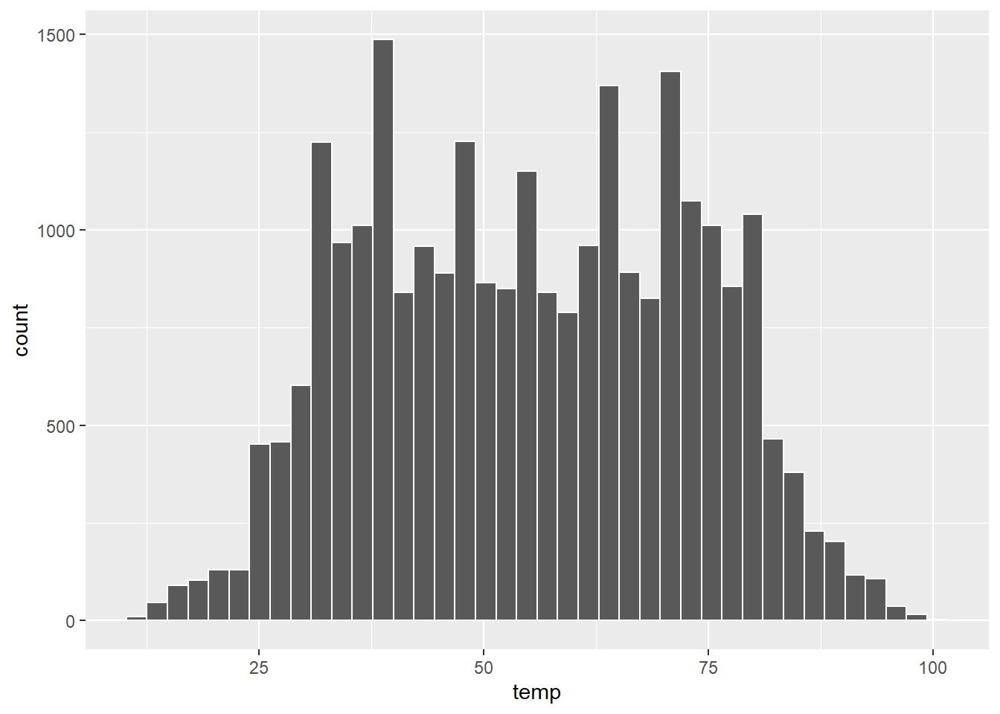

Histograms
Histograms allow us to look at the statistical distribution of a variable. They show us how many values of a variable fall within specified bins. These bins give ranges of values for which the variable lies. The bins can be altered, that is, by changing their width, or by increasing the number of bins, such that we see the distribution at a higher resolution.
Here, let's take a look at the weather data set that is within the nycflights13 library. This data set contains hourly weather data from three airports (LGA, JFK and EWR) in New York City in 2013. We can look at its contents via:
head(weather, n = 3)## # A tibble: 3 x 15
## origin year month day hour temp dewp humid wind_dir wind_speed wind_gust
## <chr> <int> <int> <int> <int> <dbl> <dbl> <dbl> <dbl> <dbl> <dbl>
## 1 EWR 2013 1 1 1 39.0 26.1 59.4 270 10.4 NA
## 2 EWR 2013 1 1 2 39.0 27.0 61.6 250 8.06 NA
## 3 EWR 2013 1 1 3 39.0 28.0 64.4 240 11.5 NA
## # ... with 4 more variables: precip <dbl>, pressure <dbl>, visib <dbl>,
## # time_hour <dttm>
## # i Use `colnames()` to see all variable namesTo create a histogram using ggplot we use the geom_histogram command, or layer, instead of geom_point as with scatterplots. We can create a histogram of the hourly temperature data in NYC in 2013 using ggplot as follows:
ggplot(data = weather, mapping = aes(x = temp)) +
geom_histogram()## `stat_bin()` using `bins = 30`. Pick better value with `binwidth`.Figure 6: Figure 8: Histogram of hourly temperature recordings from NYC in 2013.
Here, ggplot tells us that it used 30 bins when creating the histogram. We can adjust the bins in ggplot using two different approaches. Either by adjusting the
- number of bins using the
binsargument; or - the width of the bins using the
binwidthargument.
Let's first start by specifying the number of bins as follows:
ggplot(data = weather, mapping = aes(x = temp)) +
geom_histogram(bins = 60, color = "white")Figure 7: Figure 9: Histogram of hourly temperature recordings from NYC in 2013 (with 60 bins).
Task: Play around with a different number of bins. What does changing the number of bins tell us about the distribution of the hourly temperature levels?
Edit the bins argument from the previous R code. By changing the number of bins we can see the distribution of the hourly temperature levels at coarser or finer resolutions. We need to try and strike the right balance.
ggplot(data = weather, mapping = aes(x = temp)) +
geom_histogram(bins = 40, color = "white")
Note, we also specified the outline colour of the bins to make it easier to differentiate between them. The colour of the bins themselves can be changed by including the fill argument. The 657 colour options available can be found by typing the following into the R console:
colors()Instead of specifying the number of bins, we can specify their width using binwidth as follows:
ggplot(data = weather, mapping = aes(x = temp)) +
geom_histogram(binwidth = 5, color = "white")Figure 8: Figure 10: Histogram of hourly temperature recordings from NYC in 2013 (using binwidth).
Finally, we can give the histogram a title and clean up the labels to make them more informative:
Figure 9: Figure 11: Histogram of hourly temperature recordings from NYC in 2013 with updated labels.
Task: Modify the previous histogram code to produce a similar histogram to the labelled one above.
Use the fill argument to specify the colour of the bins, and add labels using the labs() function within ggplot.
ggplot(data = weather, mapping = aes(x = temp)) +
geom_histogram(bins = 60, color = "white", fill = "skyblue") +
labs(x = "Temperature (Hourly)",
title = "Hourly temperatures from NYC in 2013")